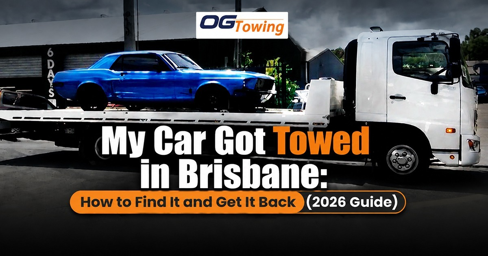

You walk back to where you parked and the space is empty. Before you report a stolen car, take a breath — in Brisbane, a missing vehicle is far more often a towed vehicle than a stolen one. The tricky part is that four completely different organisations can tow your car, and each one has its own phone number, its own paperwork, and its own clock ticking on storage fees.
This guide walks you through how to work out who has your vehicle, what you need to bring to get it released, what it will cost, and how to get the car home if it can’t legally be driven off the yard. If you already know the car simply needs moving rather than releasing, a straightforward car towing service in Brisbane can collect it from the holding yard for you.
Step 1: Work out who towed your car
Brisbane drivers lose vehicles to four separate systems. Identifying the right one in the first ten minutes saves you days.
| Who towed it | Typical trigger | Who to contact first | Time limit |
|---|---|---|---|
| Brisbane City Council | Clearway, “No Stopping” zone, parked across a driveway, unmanaged or abandoned vehicle | Council on 07 3403 8888 | 28 days before the vehicle may be disposed of |
| Queensland Police | Type 1 or Type 2 vehicle-related offence (hooning, unlicensed, unregistered driving) | The impounding officer named on your notice | 7 days, 90 days, or until proceedings end |
| Private property owner | Parking in a shopping centre, apartment or business car park without authorisation | Signage on site, then the tow operator’s holding yard | Storage accrues daily |
| Finance company | Repossession under a secured car loan | Your lender | Set by your credit contract |
If none of those fit and there is no signage anywhere near where you parked, phone Policelink on 131 444 to report the vehicle as possibly stolen.
Towed by Brisbane City Council
Council tows two broad categories of vehicle: cars parked illegally in a way that blocks traffic or access, and “unmanaged” vehicles left on a road or road-related area.
To claim an illegally parked vehicle towed from a clearway, a no stopping zone or from across a driveway, phone Council on 07 3403 8888, then arrange collection from the tow company. For an unmanaged vehicle removed from a Council road, you will need the reference number from the removal notice — or you can look it up in the published list of removed vehicles on Council’s website.
Within 28 days of the vehicle being seized you must provide proof of ownership or right to possession to Council’s satisfaction — a registration notice or statutory declaration, for example — along with photographic identification, and pay a release fee to the tow company when collecting the vehicle. There may also be an outstanding parking fine to pay to Council. If those requirements aren’t met inside 28 days, Council may dispose of the vehicle.
That 28-day window matters. Unclaimed vehicles can end up sold by tender or at auction, and the sale doesn’t wipe out what you owe. Full details sit on the Council’s towed and seized vehicles page.
Impounded by Queensland Police
Police impoundment is a different animal. It isn’t a parking issue — it’s a consequence of a charge, and the rules sit in Chapter 4 of the Police Powers and Responsibilities Act 2000 (Qld).
Impoundment means your vehicle is towed to a holding yard. Immobilisation means your number plates are confiscated and the vehicle must be kept somewhere other than a holding yard. Either can apply where the driver has been charged with a type 1 or type 2 vehicle-related offence.
How long the car is held
- First Type 1 offence (burnouts, racing, evading police, speeding more than 40km/h over the limit): police can impound the vehicle for 90 days as soon as the driver is charged.
- Second or subsequent Type 1 offence: held until proceedings end, with permanent forfeiture on a guilty finding.
- Type 2 offences (unlicensed, unregistered or uninsured driving, high-range drink driving): the first offence doesn’t trigger impoundment, but a second Type 2 offence attracts 7 days and a third attracts 90 days.
Getting it out
Your Form 157 or Form 201 impounding notice states the period and the holding yard. Tow and storage fees must be paid at the holding yard before the vehicle is released. An early release application can be made to the Commissioner of Police on limited grounds — severe financial or physical hardship, the offence happening without the owner’s consent, or the issue having since been rectified.
One detail worth knowing: if you are found not guilty or police withdraw the charges, the vehicle is released and the Queensland Police Service becomes liable for the tow and storage fees under s.111 of the Act. The Queensland Police vehicle impoundment page sets out the current forms and process.
Towed from private property
Shopping centres, apartment complexes and business car parks across Brisbane use private towing contractors. The property owner can’t tow on a whim — clear, readable signage has to be displayed before a vehicle can lawfully be removed, and towed vehicles are taken to the nearest licensed holding yard.
Two practical rules apply here:
- first, dispute second. Storage fees accrue every single day. Paying a smaller bill now and arguing about it afterwards costs far less than winning an argument three weeks later.
- Photograph everything. The signage (or the lack of it), the bay you parked in, the condition of the vehicle when you collect it. That evidence is the whole case if you later complain to the operator or to the Office of Fair Trading.
What to bring to the holding yard
Turning up without the right paperwork means a second trip and another day of storage. Take:
- Photo identification matching the name on the registration
- Proof of ownership — registration certificate, renewal notice, or a signed bill of sale if you’ve recently bought the car
- The removal notice, impounding notice, or Council reference number
- A payment method the yard accepts (many are card-only or cash-only — call ahead)
- A statutory declaration if the vehicle isn’t in your name and you’re collecting on the owner’s behalf
- Written authority from the registered owner if you’re a family member or friend doing the pickup
Yards also keep restricted hours. Ring before you drive out to Rocklea, Tingalpa or wherever the vehicle has ended up.
Getting the car home when you can’t drive it out
This is the step most people don’t plan for, and it catches out drivers in Capalaba, the Redlands and across the Brisbane CBD alike. Plenty of released vehicles can’t legally leave the yard under their own power:
- Registration has lapsed while the car sat in the yard, so driving it away is an offence in itself. You’ll need an unregistered vehicle permit from the Department of Transport and Main Roads, or a tow.
- Registration plates were confiscated during an immobilisation period.
- The car was towed after a crash and is no longer roadworthy.
- The battery is flat after weeks of storage, which is extremely common.
- You’ve decided the car isn’t worth reclaiming in which case a cash for cars buyer can take it directly from the yard once fees are settled.
Booking a local car towing pickup for the same hour you finalise the paperwork stops another day of storage being added to your bill.
What it costs
Nobody publishes one flat “impound fee” because the total is made up of separate charges: the tow itself, a release or administration fee, and daily storage. Council release fees are paid to the tow company under the current fee schedule, police impoundment costs are set under the PPRA, and private operators set their own rates within licensed limits.
Two variables drive the final number more than anything else: how far the vehicle was towed and how many days it sat. Day count is the one you control. For general market context on what tow pricing looks like in this state, see this breakdown of towing prices across the Australian market.
Common mistakes that make it worse
- Waiting until the weekend to sort it out. Storage is charged per day, including days the office is closed.
- Sending a mate with no written authority. The yard will refuse release and you’ve lost a day.
- Refusing to pay while you dispute the tow. The debt keeps growing and the vehicle can eventually be sold.
- Assuming the car is still registered. Check before you drive out — a lapsed rego turns a bad day into a fine and a possible second impoundment.
- Ignoring the 28-day Council deadline. Vehicles unclaimed after that window may be sold, and you can still be chased for costs.
- Leaving valuables in the car. Retrieving personal property from a police holding yard has to happen in police presence, at a time that suits them.
The bottom line
A towed car in Brisbane is a paperwork problem with a meter running on it. Identify who took it, gather your ID and proof of ownership the same day, pay what’s owed, and book transport for the moment it’s released. Move quickly and the whole thing is an expensive afternoon. Move slowly and it becomes a four-figure one.
Need the vehicle moved from a holding yard, a mechanic, or the roadside? OG Towing runs 24/7 across Brisbane, Capalaba and the Redlands — call 0430 917 742 or request a quote.
FAQs
Start with the location. If you were parked in a clearway, a no stopping zone or
across a driveway on a public road, phone Brisbane City Council on 07 3403 8888.
If you were on private property, look for towing signage at the entrance and
contact the operator named on it. If the vehicle was taken by police, the driver
and registered owner are issued with an impounding notice naming the holding
yard. If none of these apply, report it to Policelink on 131 444.
You have 28 days from the date the vehicle was seized. Within that window you
must satisfy Council as to ownership, provide photo identification, and pay the
release fee to the tow company. Any outstanding parking fine also needs to be
paid. If the vehicle isn’t claimed inside 28 days, Council may dispose of it —
including by auction or tender — and you can still be liable for the costs.
Sometimes. The owner or usual driver can apply to the Commissioner of Police for
early release, generally on the grounds of severe financial or physical
hardship, the offence occurring without the owner’s consent, or the underlying
issue having been rectified. Early release isn’t available where the vehicle is
held until the end of proceedings following a second or subsequent Type 1
offence. Legal advice improves your chances considerably.
If you are found not guilty at court, or police withdraw the charges, the
vehicle is released to you and the Queensland Police Service becomes liable for
the tow and storage fees under section 111 of the Police Powers and
Responsibilities Act 2000. Keep every receipt and the impounding notice, as
you’ll need them to sort out reimbursement or confirm the fees were waived.
You can’t legally drive an unregistered vehicle on a Queensland road, so you
have two options. Apply for an unregistered vehicle permit through the
Department of Transport and Main Roads, which allows a limited journey —
typically to a nominated destination such as a mechanic or inspection site. Or
book a tow truck to collect the vehicle from the yard and deliver it home. A tow
is usually faster and avoids any risk of a fresh offence.